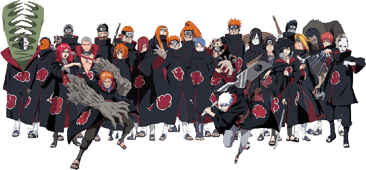

Akatsuki
History of appearance
The organization was originally founded by Yahiko during the Third Shinobi World War, along with his childhood friends, Nagato and Konan. Orphans from the Second Shinobi World War, they created Akatsuki as a way to bring peace to their home village of Amegakure, which all too often serves as a battlefield for the Five Great Shinobi Countries. Their desire to end the war attracted many Amegakure ninja to their cause, and over time, word of their exploits began to spread beyond Amegakure. Akatsuki's early fame was largely due to Yahiko's leadership and natural charisma, which held the group together and encouraged them to persevere despite the difficulties of their goal. However, Yahiko saw himself as merely a go-between for Nagato, who would eventually become the de facto source of world peace because of his Rinnegan. Over time, Akatsuki's fame began to attract unwanted attention. They were first approached by Tobi, who claimed to be Madara Uchiha and offered to help Akatsuki, in particular Nagato. Yahiko feared Tobi and turned down his offer, although Tobi claimed that Yahiko eventually agreed. Amegakure's leader, Hanz, also learned about the Akatsuki and perceived them as a threat to his government, a belief that Danz Shimura inspired him in the anime. Hanzo appeared to Akatsuki, inviting them to help mend peace between the Village of Hidden Leaf, Stone and Sand. However, when Yahiko, Nagato, and Konan arrived to meet him, they were ambushed by the men of Hanz and Danz Root, who took Konan hostage and forced Yahiko to commit suicide in order to save her. Furious at Yahiko's death, Nagato summoned the Demonic Statue of the Outer Path and used it to kill his attackers, although Hanz himself escaped.
Commands
Black Zetsu and White Zetsu
Zetsu was an ally of Tobi who assisted him in forging an alliance with Nagato and officially joined Akatsuki, seemingly long before Tobi himself did. Although Zetsu usually acts as one person, he is actually composed of two entities: Black Zetsu and White Zetsu. These two sometimes argue with each other, but this has never interfered with the performance of their duties: espionage, destruction of traces and obtaining resources. Zetsu was the member of the organization that other members met most often, besides their partners. Zetsu usually assisted in getting the jinchūriki to one of Akatsuki's hideouts to retrieve the tailed beast from it.
Orochimaru and Sasori
Orochimaru and Sasori were among the early teams formed by Akatsuki. Little is known about their actions, but they appear to have worked well together during their partnership. The two also got along well enough that Orochimaru knew what Sasori's real body looked like, hidden behind the guise of the Hiruko doll, although their relationship eventually deteriorated to the point that both wanted to change partners. Sasori sharpened a grudge against his former partner when Orochimaru fled Akatsuki and took a personal interest in his next steps.
Juzo and Itachi
Juzo and Itachi worked very well together as partners on at least three different missions that involved assassination and sabotage. Their team was the only one in Akatsuki to use the formation system to achieve better synchronization with each other. Formation A: Used when they each attacked individually and fought as they saw fit. "Formation B" meant Itachi attacks using his genjutsu or shuriken, after which Juzo finishes off the defused shinobi with his sword. "Formation C" was Juzo's personal request to be killed by Itachi in case the former was captured by the Hidden Mist, and "Formation D" was the command that Itachi himself should have proposed, but he refused to do so. Ultimately, Juzo was killed by the Fourth Mizukage while on a team mission to assassinate a citizen of the Land of Water. Severely wounding Yaguru, Itachi placed the remains of the Kubikiribocho into his partner's hand, paying tribute to his fallen comrade.
Itachi and Kisame
Kisame believed that their team was well formed, as both shinobi earned notoriety for killing their own comrades. Despite having opposite personalities, Itachi and Kisame got along well: Kisame had a greater tendency to violence, but he always obeyed Itachi's orders, even when it took away from him the opportunity to kill someone. Kisame feels sad after Itachi's death, and Itachi himself, during his resurrection, shows some regret when he learns of Kisame's death.
Deidara and Sasori
Deidara was forcibly recruited (with the help of Itachi) to replace Orochimaru as Sasori's partner. Each of them considered himself an artist, although he showed little respect for the preferences in the other's art: Sasori believed that art should be eternal, like his puppets, and Deidara argued that art is fleeting, as in its explosions. Deidara was somewhat respectful of Sasori, as he was more experienced, but was very disappointed with his death.
Kakuzu and Hidan
After Kakuzu killed all of his previous partners in fits of rage, he got Hidan, an immortal he could not kill, as a partner. Hidan considered Kakuzu's passion for money to be blasphemy, and Kakuzu desperately wanted to kill him, as his religious habits were constantly taking extra time. Despite this, they were essentially the most spectacular couple in the organization, dubbed the Immortal Combo (不死 コ ン ビ, Fushi Konby) [12] and Zombie Combo (ゾ ン ビ コ ン ビ, Zonby Konby). [13] If Hidan was dismembered, Kakuzu could easily have him stitched together. The latter, at the same time, could use reckless attacks without worrying about killing Hidan in the crossfire. Shikamaru Nara argued that they cannot be stopped while they are together.
Deidara and Toby
When Tobi replaces Sasori as a member of the Akatsuki, he also becomes Deidara's new partner. Based on the personality that Toby portrayed, he constantly annoyed Deidara with his open disrespect or apparent ignorance. Deidara tried several times to kill Tobi in annoyance, but he never succeeded or did not complete it. Deidara, who was not aware of Tobi's real identity, considered him to be something of an apprentice, teaching him the ways of life and how best to achieve success in Akatsuki. Deidara even expressed some affection for Tobi, warning him to move a safe distance from his C4 and later apologizing for what he thought would kill Tobi before using C0.
Allies
In addition to the main members of the organization, Akatsuki possessed a number of allies located in many countries. Most of them were associated with one individual member instead of the entire organization as a whole.
- Amegakure is Pain's base of operations.
- Kirigakure was under Obito's control.
- Kirigakure was under Obito's control.
- Juura is Sasori's subordinate.
- Mukade is Sasori's subordinate.
- Funari is Kakuzu's subordinate.
- Ginji is Kakuzu's banker.
- Kyoya is Kakuzu's accountant.
- Zangei is Kakuzu's head bounty collector.
- Taka is an ally team.
- Kabuto Yakushi - Sasori's spy, later collaborated with Obito.
- Madara Uchiha is Obito's ally.
- Tobi is an ally of Madara and Obito.